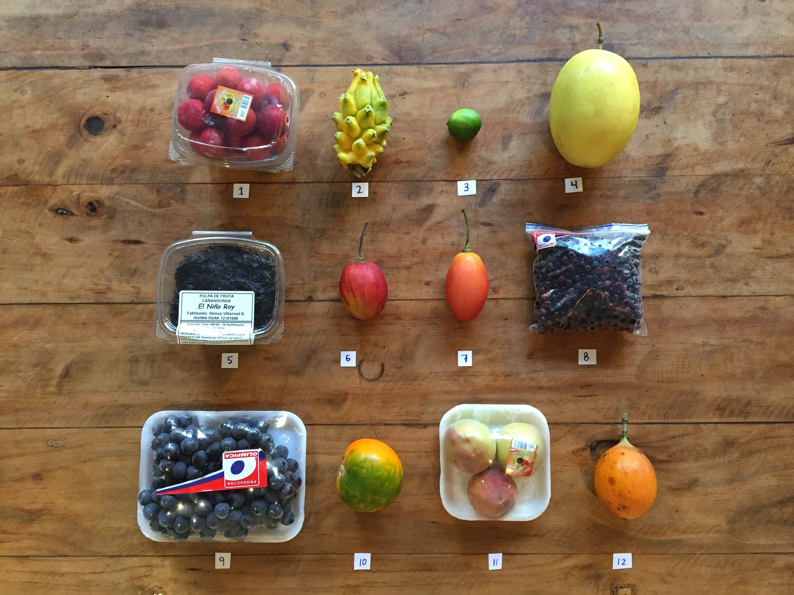

ELOISE LIKES WRITING: FRUIT ASSESSMENTS

{kind=link}
{kind=link}
{kind=link}
We're in Colombia for the week, so I went to the grocery store and got every fruit I didn't recognize. Results:
#1: Basically a very tiny, very tart plum
Eloise's rating: 8/10, plus 1 bonus point for being adorable
Sam's rating: 5/10
Overall rating: 7/10
#2: Dragonfruit! I've had these in the US but didn't recognize it from the outside.
E: 3.5
S: 6.8
Overall: 5.15
#3: A very tiny lime! Sweeter than the limes I'm familiar with
E: 4, plus 1 bonus point for being adorable
S: 8.5
Overall: 6.75
#4: Super sweet and delicious. Sam abstained from taste testing because it looks too gross
E: 10
#5:
"sticky abomination" - Eloise
"very confusing" - Sam
E: 0
S: 7
Overall: 3.5
#6: tastes sort of like a cantaloupe, but better
E: 4
S: 8
Overall: 6
#7: like #6 but less sweet
E: 2
S: 7
Overall: 4.5
#8: tart, unfamiliar flavor
E: 6
S: 5.5
Overall: 5.75
#9: look similar to grapes, but insides are very liquid and skin is thick. Very sweet
E: 9
S: 2
Overall: 5.5
#10: Strangest taste after the sticky abomination. Sweet and sour and tart
E: 6
S: 7
Overall: 6.5
#11: These might just be underripe peaches
E: 4
S: 5
Overall: 4.5
#12: granadilla! Similar to #4, but sweeter. Sam again abstains from taste testing because it looks too gross
E: 10